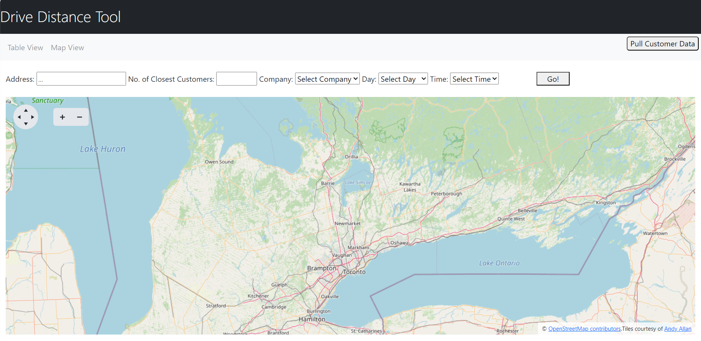

Roma Fuels and Brown's Fuel are two fuel distributing companies, who deliver fuel directly to their
customers' front doors. They wanted a project which would create an easier way to add new customers
to their existing delivery routes.
I was tasked with creating a program which would allow the user to enter the address for a
customer which they want to add to an existing route, and then returns a list of the ‘n’
closest customers (where ‘n’ is an integer also supplied by the user) which are displayed on
both a map and a grid in order of driving distance to the new address. There also exist
additional filters to pick only customers from one of the companies, only the customers that
are delivered to in the morning (AM) or evening (PM), or only the customers that are delivered
to during certain days of the week. These filters would prove useful in a situation where,
for example, the new customer can only be delivered to on weekday mornings.

The screen you see when you click "Map View", used to enter the new customer.
The map view screen after pressing "Go", and the closest customers have been retrieved.
What you see when you click "Grid View", and you have already searched for a new customer.
The program uses a service, Azure Maps, to display the map and render the markers representing
the customers’ addresses. The existing addresses are represented by blue markers, while the new,
'target' address is represented by a red marker.
The program uses Kendo for the grid which has built-in features such as sorting by one of the
columns, filtering by some string or word, paging the results, grouping by a field, etc.
The biggest challenges of this project had to do with getting all of the customer data that I needed
efficiently. For a while I had the program re-pull the customer data each time the user searched,
and that worked at first but eventually I had to perform different requests to get different data.
I worked a lot with getting the data: reducing the number of calls, only taking the data I needed,
finding more efficient calls with more information, etc., and in the end I had to separate the
functionality of getting the data, from the functionality of searching for the nearest customers.
Working on this program taught me a lot about how to effectively use web service calls to retrieve
important data for a program. I learned about the power of these tools, but also the downside with
how costly these calls can be.